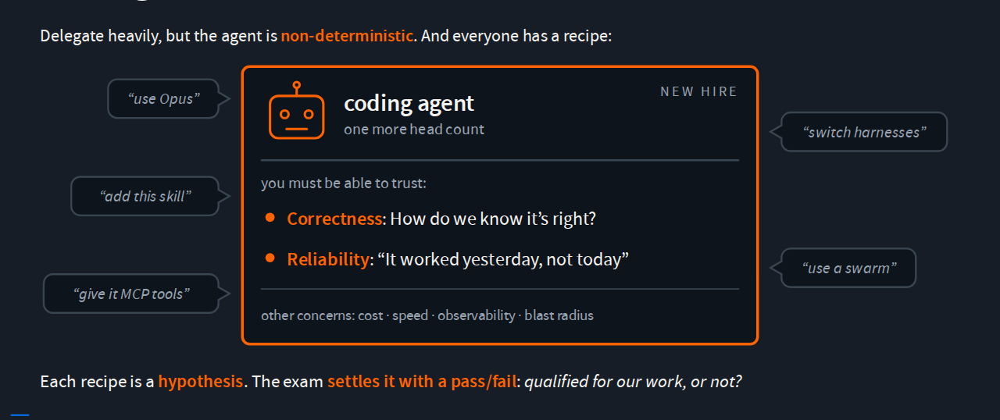
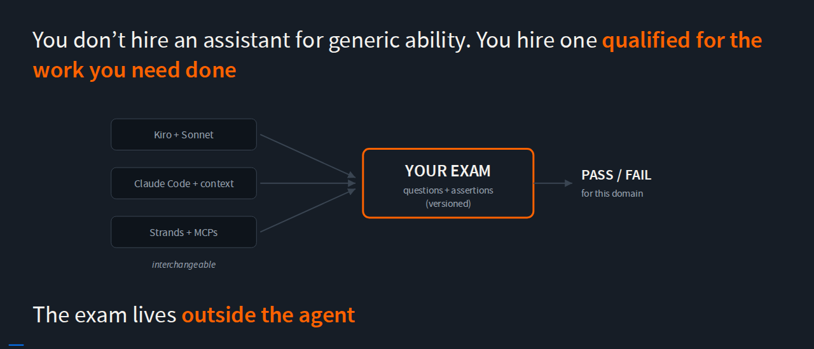
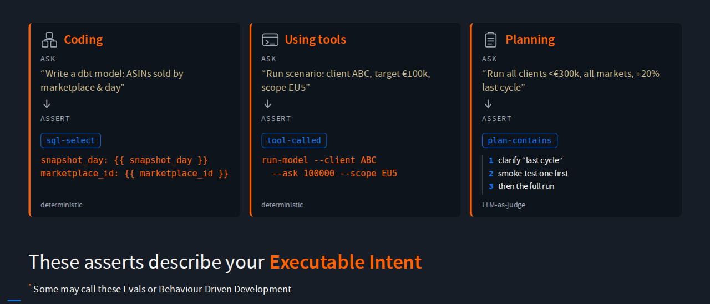
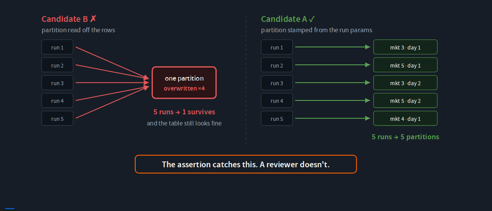
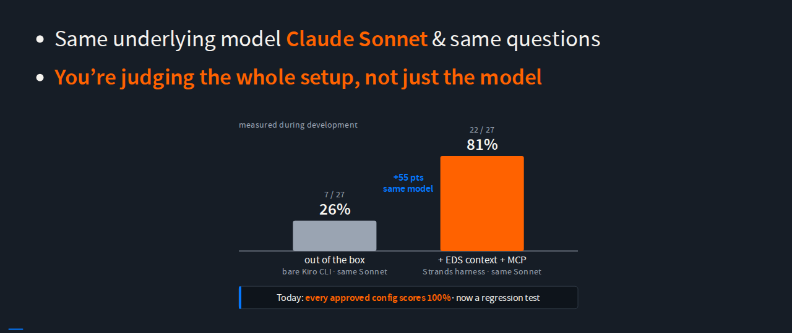
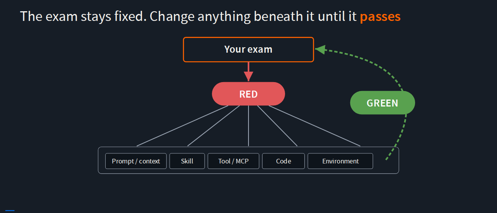
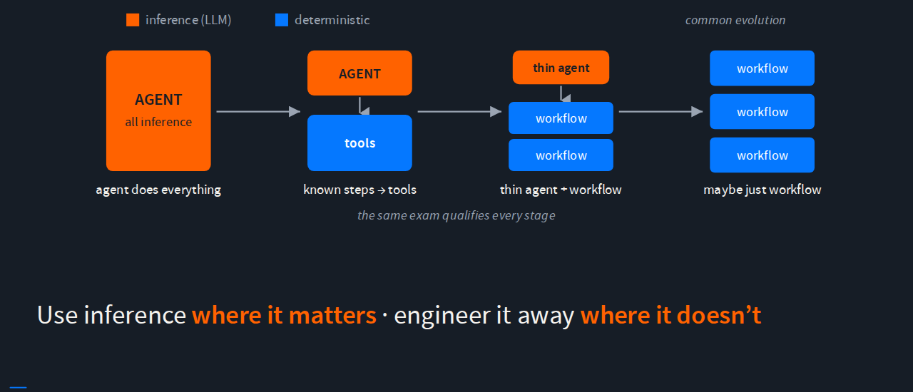

Given at Analyticon EMEA 2026, Amazon’s internal analytics and science conference, at Kinepolis Kirchberg in Luxembourg. Mayank Hirani worked on this project with me.
Abstract
Economists on our team use AI coding agents for most of their everyday work, from exploratory analysis to production econometric models. Engineers aren’t a bottleneck and the agents work well, but how do you keep control when the model, the prompt, or the harness can change at any time? It’s like delegating to a research assistant you want to trust without supervision.
You give them an exam that tells you whether they’re qualified to operate unsupervised in a specific domain. An exam is a set of questions with assertions, versioned in git and living where the economists already work. The exams encode what “good enough” means: SQL conventions, good practices, domain-specific economics workflows. Deterministic checks where possible, LLM-as-judge only where the answer can be phrased many ways. Composable, agent-independent, and easy to rewrite when a new SDK drops next week.
Any part of the black box can change, whether a model swap, a prompt refactor or a new agent SDK, and we run the exam. You trust what you can test.
Slides and Transcript
- Give Your AI Agent an Exam Before You Give It a Job
- Transcript (WebVTT), an edited transcript timed to the recording
The Talk in Article Form
If you’d rather read than click through slides, here’s the talk as an article.
The economists on my team use coding agents for most of their everyday work, and we want to delegate heavily to them. As soon as you think “I’m going to delegate to an agent”, you run into an issue of trust. How can I trust it? How can I know that it is right?
My answer is to give the agent an exam before you give it the job.
The team, and why trust matters
Our team is called Economic Decision Science. We’re a cross-functional team of economists and engineers, and we heavily skew towards economists. The goal of the engineers is that economists can deliver without engineering bottlenecks: the code they produce and iterate fast on is what we push and deploy to production. We don’t need to hand over to engineers to scale.
We do that with what we call the factory of economics. We identify the capabilities economists need to do their job, and we build small building blocks, guaranteed to be fast and easy to use, that they can mix and match: running SQL models, generating backfills, scheduling runs, publishing tables. We did this before the AI era. When coding agents appeared we adopted them naturally, and we never mandated them; they were just the easiest thing to use.
Everyone has a recipe

I like to think of agents as hires, as headcount. Once you delegate to one, you need to know it’s correct, and you need it to be reliable: it worked today, but will it work tomorrow, or next week? There are other concerns too, like cost, speed, observability, and the blast radius when it makes a mistake.
As you start discussing this, you’ll find that everyone has a recipe. Someone tells you that you should be using Opus, or that this skill will solve everything, or that you should switch harnesses. Or even worse, that one agent is old news and you should be using a swarm. These are conversations you don’t want to have internally.
So treat those agent configurations as hypotheses, and create a pass/fail exam for the work you need done, so you can tell whether a configuration is qualified to do it.
Hire for the job, not for the benchmark

Going back to the analogy of the hire: we don’t hire an agent for its generic ability. We don’t go to a website, see a benchmark and say “let’s just use this one”. We want the one that’s qualified for the work we need.
So we create an exam for the job. Any setup can sit it: Kiro with Sonnet, Claude Code with some context, Strands with MCP tools. I don’t care what the implementation of those agents is. What I care about is whether they pass the exam that I have.
The logic for the exam doesn’t live in the agent. I can replace any of those agents, and as long as I have my exam, I know whether I can bring something in. The exam outlives all these agent configurations.
What an exam looks like

An exam is a set of questions with assertions, versioned in git. We use three types of questions:
- Coding. We use dbt, which has SQL with a certain flavor, and we want the agent to write it correctly. That’s easy to tell.
- Using tools. We build our own tools. If we ask certain questions in natural language, we expect the agent to run our tool, not create some Python code that solves the problem.
- Planning. For ambiguous questions, we want it to ask the user first to clear up the ambiguity, and to run a smoke test so it fails fast instead of doing a very long run.
We use deterministic checks where possible, and an LLM as a judge only where the answer can be phrased many ways.
With these questions you’re encoding your intent in a way that’s executable and provable, so you could call it executable intent. You can also call it an AI eval, because it asserts on the output of LLM inference, or behavior-driven development, because you’re thinking end to end about a user story and saying “this is how I expect things to be”.
One question, up close
Here’s a specific exam question, for a problem we’ve had in the past.
When we give our economists the tool to create SQL models, they don’t necessarily know a lot about partitioning. But we want them to partition things in a specific way that lets them run many marketplaces, or many days, at the same time, for backfilling.
In dbt that requires a specific syntax: a Jinja template variable that turns { marketplace_id } into a literal 3 when it compiles. If you just select marketplace_id from the rows instead, all the competing runs try to write to the same place, and you overwrite your own data.

Both look like reasonable dbt. One agent did the right thing and one did the wrong thing. It’s very subtle, but it’s the kind of work we do, and it’s very us. You won’t necessarily have the same opinions of how things should work; maybe you’re using Iceberg and we use Hive. Your exam has your rules.
It’s the setup, not the model

It’s not about the model. It’s about the whole setup that makes the agent behave the way it does. At one stage we had 27 exam questions and the same model, Sonnet. With no context and no MCPs it passed 7. With our context and MCP tools it passed 22.
In our case the harness wasn’t the issue. It was the lack of context, or of certain MCP tools, that kept the right behavior from happening. Right now everything we ship to our economists passes the whole exam, and we use it as a regression test of sorts.
The exam becomes the feedback loop

Once you have your exam, it can be a great tool for a development feedback loop that closely resembles test-driven development. You write down the behaviors you expect, they start out red, and you change parts of your agent setup until they turn green.
Many things govern the agent’s behavior: the coding harness, the CLI tools it has access to, MCPs, skills, the prompt and always-on context, and things in the environment. The nice thing is that it’s not necessarily the agent you change. Maybe you discover that the tools it had access to were not fast enough, so you change those, or the tables you had access to weren’t partitioned well enough, so you change those.
Use inference where it matters

LLMs can have a great degree of agency, and you don’t know exactly what you’re going to get. Initially you may start with most of the behavior in LLM inference, maybe just a markdown file. As you work more on your problem, you may build a small deterministic layer, a tool the agent starts calling, and you’ve encoded some behavior in a more testable way. Further on you may have a thinner agent and workflows, and you may even remove inference completely.
That last case is the one we end up with most often. We use AI all around the problem while we work on it, but once the problem is well known, the workflow itself often doesn’t need inference. The same exam qualifies every stage. Use inference where it matters, and engineer it away where it doesn’t.
Takeaways
- Qualify the capabilities you need, not the model. It doesn’t matter how an agent is implemented; it only matters whether it’s good enough for you.
- Make “good enough” executable. A little goes a long way towards being able to trust the AI systems you use.
- Use the exam to build, not just to score. Don’t just run something and get “66% accuracy”. It’s a fuzzy number and no one knows what to do with it. Make it pass/fail, own that gate, and then you’ll be able to delegate heavily.
If I have to give you one piece of advice: start with one behavior your AI must get right, turn it into an exam, and make any implementation pass it.